{{appName}}


"
Define reusable functionality that determines your application’s behavior based on the configuration (data) defined in your custom metadata type
"
What are the Custom Metadata Types
- Custom metadata types enable you to create your own setup objects whose records are metadata rather than data.
- These are typically used to define application configurations that need to be migrated from one environment to another, or packaged and installed.
- You can create custom metadata types and add metadata records, with all the manageability that comes with metadata: package, deploy, and upgrade.
- Querying custom metadata records doesn't count against SOQL limits.
Uses of Custom Metadata Types
- Mappings—You can use custom metadata types to create associations between different objects.
For example, you can create a custom metadata type that assigns cities, states, or provinces to particular regions in a country. - Business rules—Salesforce has lots of ways to define business rules.
One way is to combine configuration records with custom functionality.
For example, you can use custom metadata types along with some Apex code to route payments to the correct endpoint. - Master data—Say that your org uses a standard accounting app. You can create a custom metadata type that defines custom charges, like duties and VAT rates. If you include this type as part of an extension package, subscriber orgs can reference this master data.
Custom metadata types support
- Metadata Relationship
- Checkbox
- Date and Date/Time
- Email and Phone
- Number
- Percent
- Picklist
- Text and Text Area
- URL
Creating Custom Metadata Type
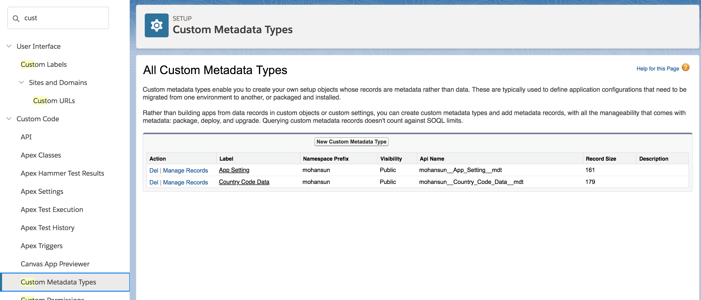Adding Custom Fields to Custom Metadata Type
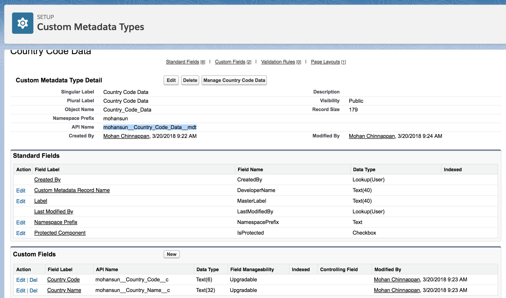Managing data - Custom Metadata Type
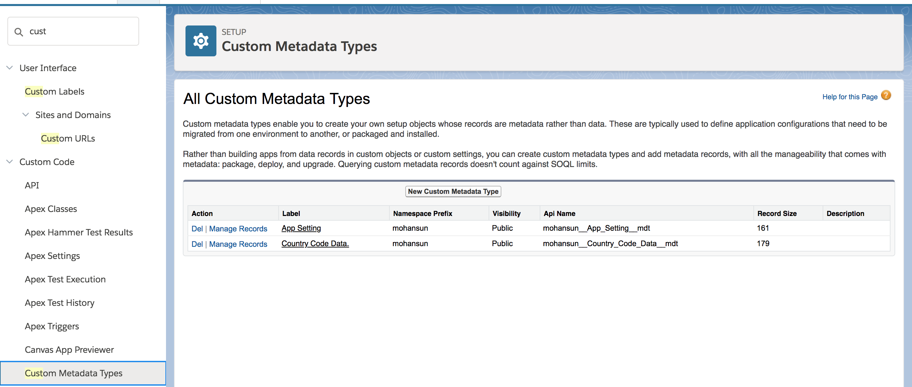Metadata - Custom Metadata Type
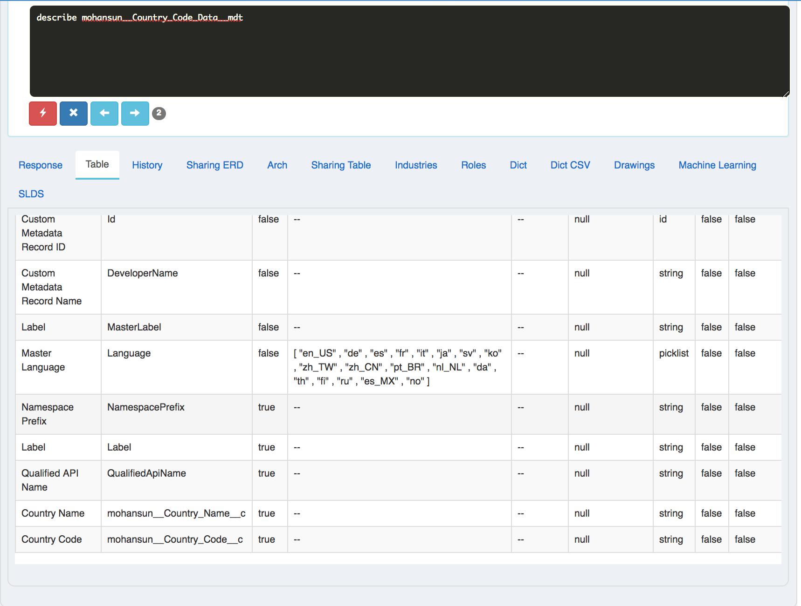Managing data - data - Custom Metadata Type
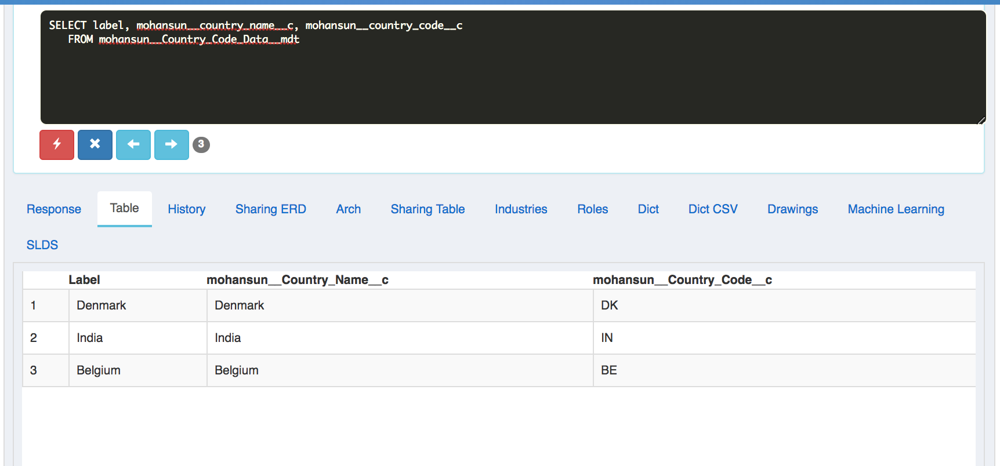Declare an Apex variable of a custom metadata type
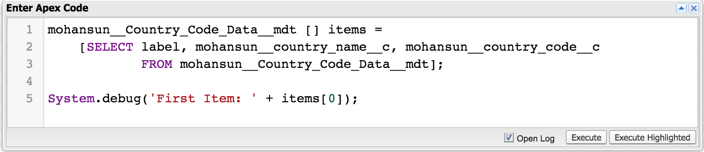 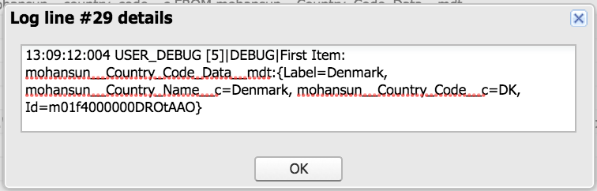Relationship Among objects - key factors
- handle data deletion
- record ownership
- security
- required fields in page layouts
Types of Relationships
| Realtionship Type | Data deletion | Record Ownership | Paget layout requirements | |
|---|---|---|---|---|
| Master-Details (1:n) - parent-child relationship. Master object controls certain behaviors of the detail object | When a record of the master object is deleted, its related detail records are also deleted. | The Owner field on the detail object is not available
|
The master-detail relationship field is required on the page layout of the detail record |
Master-detail (1:n) Notes
- The detail object doesn’t work as a stand-alone.
- By default, records can’t be reparented in master-detail relationships. Administrators can, however, allow child records in master-detail relationships on custom objects to be reparented to different parent records by selecting the Allow reparenting option in the master-detail relationship definition.
-
You can define master-detail relationships between custom objects or between a custom object and a standard object.
C:C, S:C
However, the standard object cannot be on the detail side of a relationship with a custom object. C:S not allowed, since standard object can't lose the Owner field
In addition, you cannot create a master-detail relationship in which the User or Lead objects are the master.
- When you define a master-detail relationship, the custom object on which you are working is the detail side. Its data can appear as a custom related list on page layouts for the master object.
- You can create rollup summary fields on the master record to summarize the detail records.
- The relationship field allows users to click on a lookup icon to select a value from a popup list. The master object is the source of the values in the list.
- As a best practice, don't exceed 10,000 child records for a master-detail relationship.
- Each custom object can have up to two master-detail relationships and up to 25 total relationships.
Many-to-Many - Notes
- You can use master-detail relationships to model many-to-many relationships between any two objects.
- A many-to-many relationship allows each record of one object to be linked to multiple records from another object and vice versa.
- For example, you create a custom object called “Bug” that relates to the standard case object such that a bug could be related to multiple cases and a case could also be related to multiple bugs.
- To create a many-to-many relationship, create a custom junction object with two master-detail relationship fields, each linking to the objects you want to relate. M:J:D, Example: Case : Case-Bug : Bug
Many-to-Many - Case-to-Bug - Step-1
- Create the Custom Juction Object: BugCaseAssociation
Many-to-Many - Case-to-Bug - Step-2
- Create Master-detail Realtionship field for : BugCaseAssociation object

Many-to-Many - Case-to-Bug - Step-3
- Set Master-detail Realtionship field for : BugCaseAssociation object as Case object
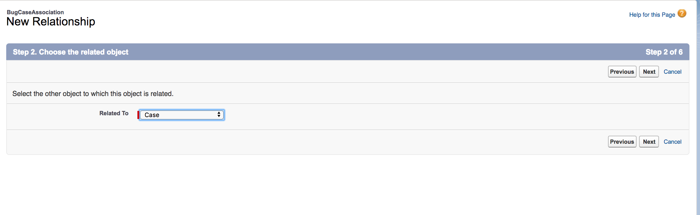

Many-to-Many - Case-to-Bug - Step-3 - contd.
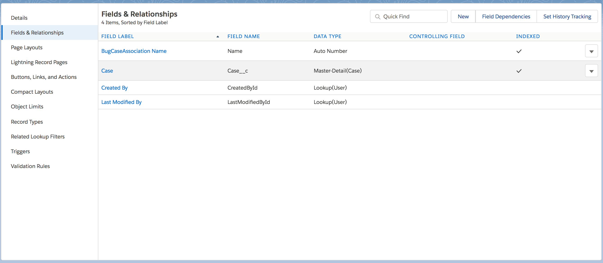Many-to-Many - Case-to-Bug - Step-4
- Set Master-detail Realtionship field for : BugCaseAssociation object as Bug object
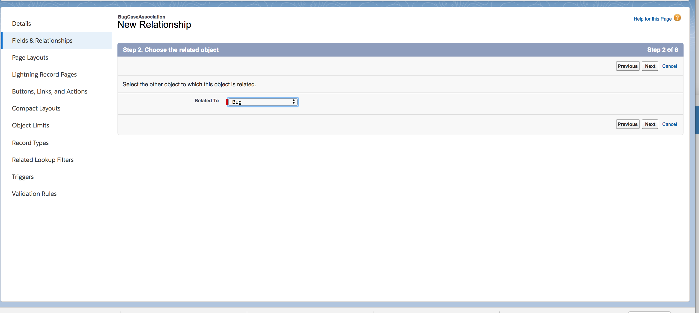
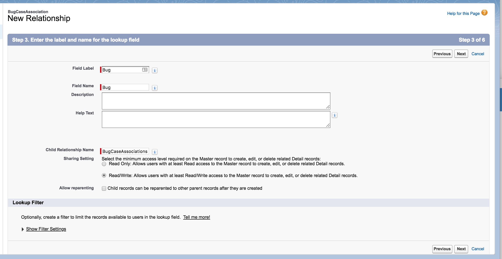
Many-to-Many - Case-to-Bug - Step-4 - contd.
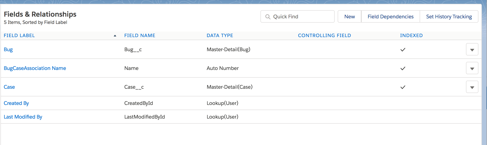Many-to-Many - Case-to-Bug - Schema
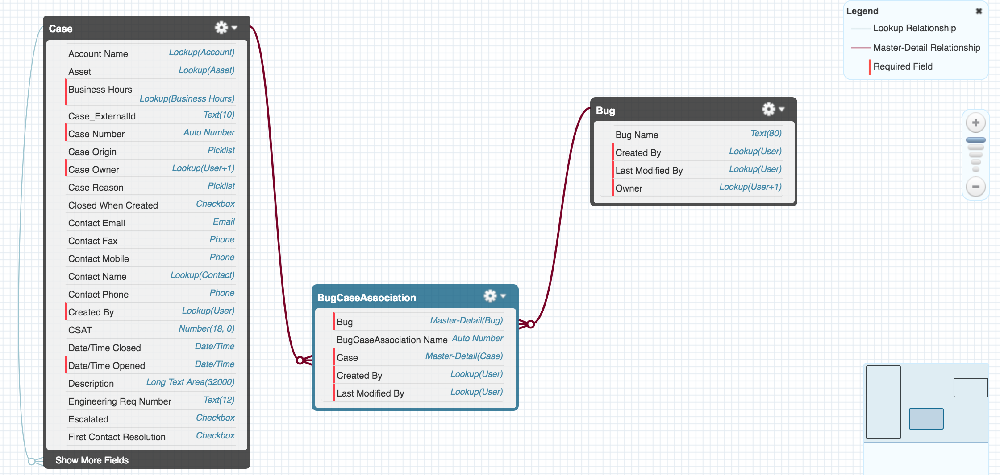Lookup
- Links 2 objects together
- Similar to Master-detail relationship, except Lookups do not support sharing or roll-up summary fields
- An Object can link to itself (except: User Object) (hierarchical): Custom Object Bug link to itself - to show how different bugs are releated.
Lookup example : Account - Contact
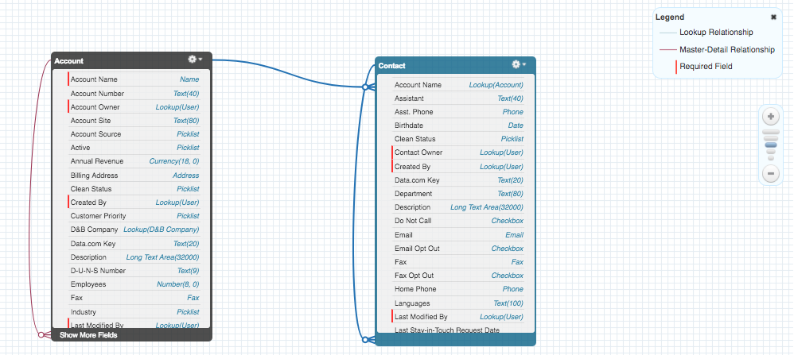Lookup example : Property - Offer

Lookup - Notes
- If the lookup field is Required :Make the lookup field required for saving a record, requiring it on the corresponding page layout as well.
- If the lookup field is Optional :
- Clear the value of this field
- Don’t allow deletion of the lookup record that’s part of a lookup relationship
- Delete this record also ( can result in a cascade-delete) - to provide tightly coupling
- A cascade-delete bypasses security and sharing settings,
which means users can delete records when the target lookup record is deleted even if they don’t have access to the records.
To prevent records from being accidentally deleted, cascade-delete is disabled by default.
Contact Salesforce to get the cascade-delete option enabled for your organization.
- We can use lookup relationships when objects are only related in some cases.
Sometimes a contact is associated with a specific account, but sometimes it’s just a contact.
Objects in lookup relationships usually work as stand-alone objects and have their own tabs in the user interface.